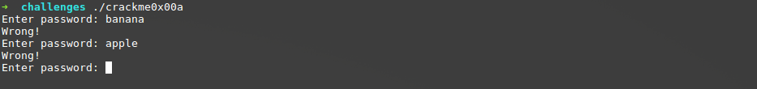
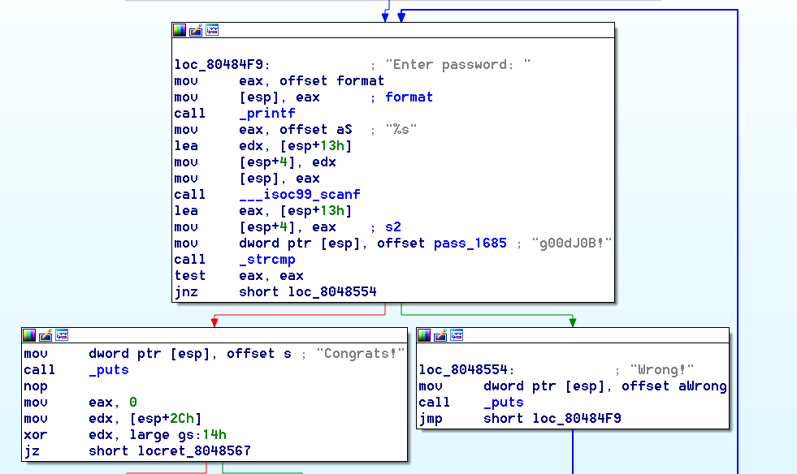
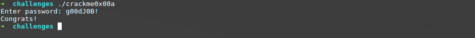
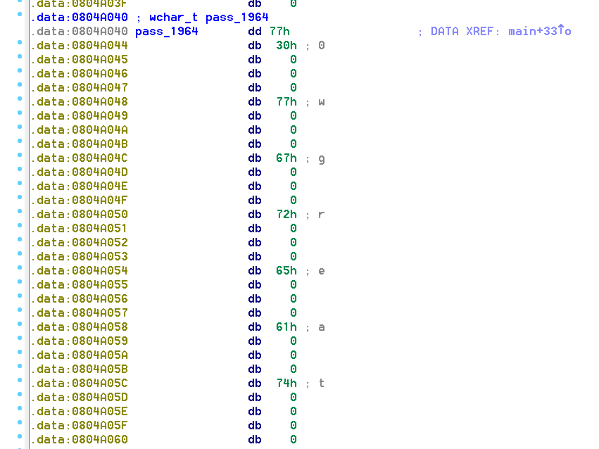
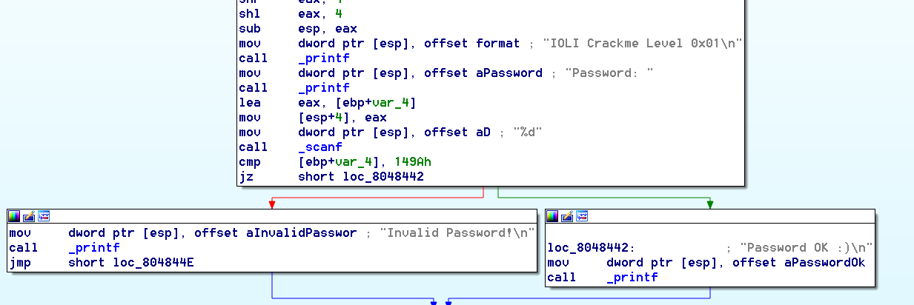
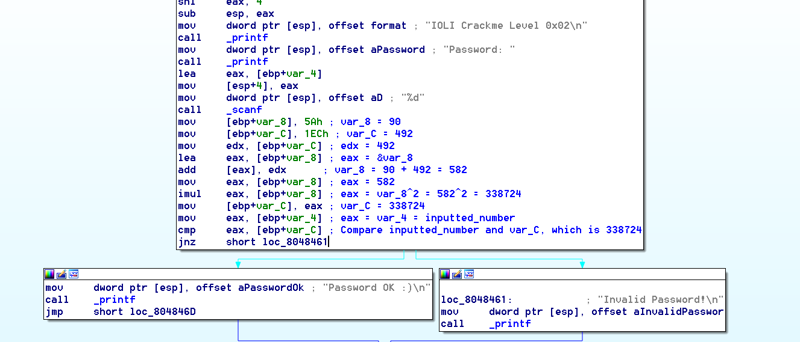
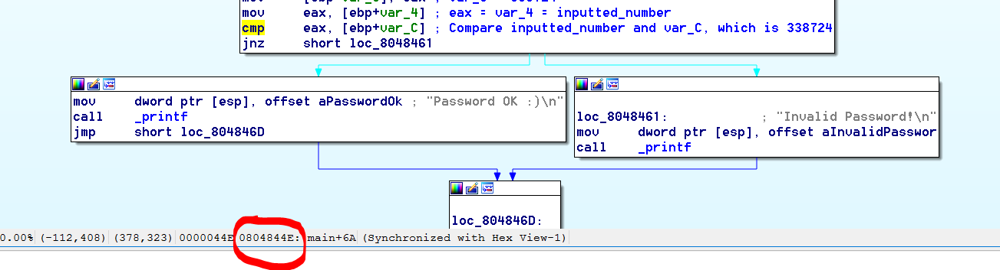
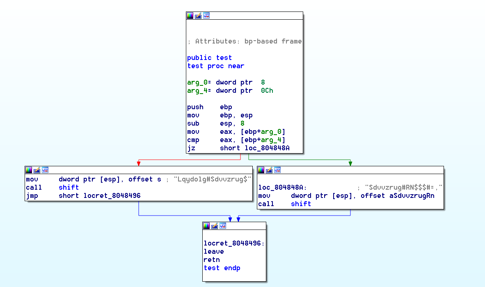
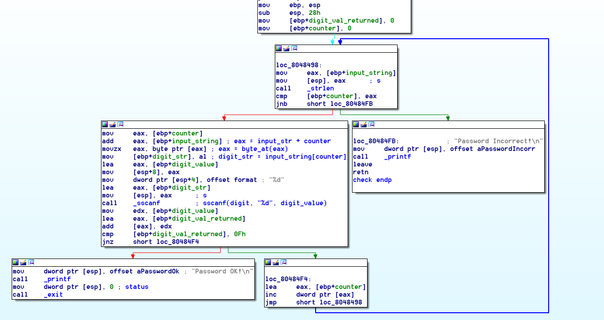
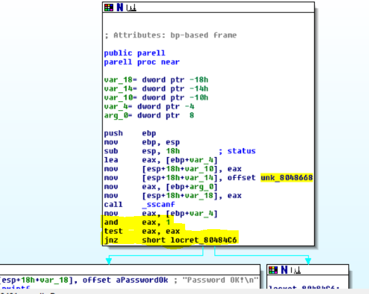

RPISEC MBE Crackmes
RPI has generously published their Modern Binary Exploitation course on GitHub for all to use for free (here). This class was created to be
an introduction to reverse engineering for complete beginners, and so this is where I start my reversing
journey. The problems below can be found here.
A crackme is a challenge where you are given a compiled program that requires certain input to give access to a user. In order to discover what the input is, you will need to reverse engineer the application and trace what happens to the input.
My first step in this process was to install peda. Peda is a Python framework for GDB, which is a code debugger. GDB is an invaluable tool for reverse engineering, but it requires a lot of manual work to do useful things, like displaying the contents of registers and the stack. Peda is an extension that gets added to the .gdbinit script that adds these functionalities for you, saving you a good amount of time and effort. Another tool that you may find extremely useful is a debugger, like IDA.
Installation (from the peda documentation):
A crackme is a challenge where you are given a compiled program that requires certain input to give access to a user. In order to discover what the input is, you will need to reverse engineer the application and trace what happens to the input.
Table of Contents
Setup
My first step in this process was to install peda. Peda is a Python framework for GDB, which is a code debugger. GDB is an invaluable tool for reverse engineering, but it requires a lot of manual work to do useful things, like displaying the contents of registers and the stack. Peda is an extension that gets added to the .gdbinit script that adds these functionalities for you, saving you a good amount of time and effort. Another tool that you may find extremely useful is a debugger, like IDA.
Installation (from the peda documentation):
git clone https://github.com/longld/peda.git ~/peda
echo "source ~/peda/peda.py" >> ~/.gdbinitcrackme0x00a
We start by looking at the first crackme. When we run the file, we are given a password prompt. When we input an incorrect password, the program returns by saying "Wrong!" and asks again, presumably until the user enters the right password.

Opening the binary in IDA gives the following:

We can clearly see that there is a call to scanf, which reads in a string from stdin. The inputted string is compared against another string, pass_1685, by the function strcmp. If the comparison passes, we are met with a text that says "Congrats!". Else, we are met with a text that says "Wrong!". After the incorrect comparison, there is a loop back to the password prompt. What is the value of pass_1685? IDA has automatically printed the value for us to see, which is the text "g00dJ0B!". Entering this as the password grant us access!

crackme0x00b
Running the binary results in identical behavior to the last one. When we open it in IDA, we see nearly the same binary except that instead of using the strcmp function, this binary uses wcscmp. A quick lookup at the man page for this function shows that this function is almost identical to strcmp except that it operates on wide character strings instead of normal character strings. Double clicking on the name of the string being checked against, "pass_1964" this time, shows us the password string in memory as wide-characters.

Note that one of the characters is a little hidden - at address 0804A040, we see the value 77h but IDA didn't detect the character. The complete password, therefore, is chr(0x77) + "0wgreat". chr(0x77) is the letter "w", so the complete password is "w0wgreat". Entering this string as the password grant us access!
crackme0x01
This binary asks for a password, but quits after receiving an incorrect password instead of repeatedly asking for it. Opening it in IDA, we see the following.

This time, the inputted value is being read by scanf as an integer (the "%d" format string tells us this). What integer is our input being compared against? In the call to cmp, we see the value 149Ah. This is the same as 0x149A, or 5274 in base 10. Entering this as the password grants us access!
crackme0x02
This binary is the same format as the previous binaries. Opening it in IDA, we see that it also takes an integer as input. However, a series of operations are performed on some other value before being compared to the input. I have annotated the operations in comments here.

Inputting the final value being checked against, 338724, grants us access. Note that we can arrive at the value even more quickly by using a debugger like gdb. We know that the value being compared against the input is var_C, so we just need to set a breakpoint on the cmp instruction and print the value of var_C. Let us see how this is done:
Open GDB by typing:
gdb crackme0x02b *0x0804844E
Now, type "run" to run the program in GDB. It will prompt you the password as it did before. Type in anything and press enter. GDB will resume execution until it hits the breakpoint, then peda will display the contents of several useful pieces of information, such as stack contents and register contents. We know that we want to see the value at [ebp+var_C], but var_C is just a name given for an offset by IDA. In GDB, we see the value of var_C is actually -0xC. To print the value at this location, type the following.
x/1dw $ebp-0xC- - Examine the contents of memory, reading 1 word as a decimal.
- - Look at the memory address defined by the computation $ebp-0xC

As you can see, we get the same value as we got in IDA! Using a debugger can be a lot easier and take a lot less time than going through instructions in IDA manually, so use this to your advantage!
crackme0x03
This binary runs the same as the previous binary. Opening it in IDA, we see very similar computations as the previous binary, but we seem to be missing the text that says "Invalid Password!" and "Congrats!". Examining the assembly reveals that the binary calls a function called "test" which we can reach by double-clicking on the word "test".

It looks like there's some arguments being checked before printing some text, but the text appears jumbled. That text is passed as a parameter to another function called "shift". So, one can guess that after the input is checked, the shifted text is printed, which indicates success or failure. So, like before, just set a breakpoint on the value being checked before the cmp instruction and print it out. It turns out that the value is the same as in the previous challenge, which is 338724.
crackme0x04
This binary runs the same as the previous binary. Opening it in IDA, we see that the input string is sent as an argument to a function called "check". Inside the test function, we see a few different variables and basic blocks. The first block of code that branches checks the length of the input string against some variable. At the bottom, this variable gets incremented and then the code executes at the top again. That variable is likely a counter, so we can rename the variable as such by pressing the "n" button in IDA. On the success path basic block, we can determine that the code reads one character from the input string, scans it as an integer, and adds the value to some kind of running total. When the total hits the value "15", we get the "Password OK!" message. So, as long as we enter a number whose digits can sum to 15, then the program should accept the password. Much of this behavior can be observed by running the program through a debugger and observing register values, but here is a commented IDA screenshot anyway.

Inputting the number 12345 does the trick, and we are granted access!
crackme0x05
This binary runs the same as the previous binary. Opening it in IDA, we see that the input string is sent as an argument to a function called "check". Similar to the last problem, this binary reads in a number and sums the digits one at a time. If at any point the sum hits the value 16, a function called "parell" is called.
Inside the parell function, the number is bitwise-anded with 1, and then the test instruction is called. This is just x86's way of checking if the number is even or odd. If the number was odd, then the bitwise-and with 1 would result in the value of 1, and calling the test instruction would not set the zero flag. If it was even, then the bitwise-and would result in 0, and a test instruction would set the zero flag. To get access to the path with the "Password OK!" string, we need the test instruction result to be 0 - in other words, the number must be even.

In summary, to gain access, we need to enter an integer whose digits sum to 16 at some point and is even. I chose the number 55510, and it worked!